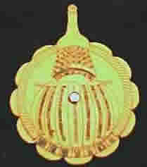

En honor a todos los indigenas colombianos, aplicamos un formato del calendario universal en está bella pieza de la cultura quimbaya, "El Poporo".
Calendario que va desde el año 1900 a 2015. con el día exacto de la semana.
Pedidos al A.A. 140183 Colombia o al email. corima937@hotmail.com